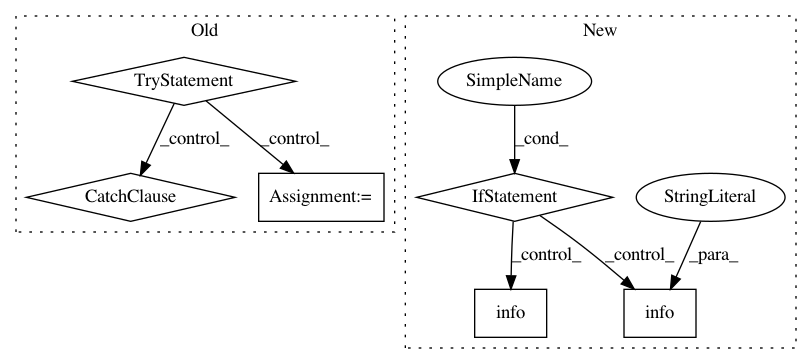

fd1456ac36e0a1ebfb800c9593f1540858ca7bea,src/python/pants/backend/core/tasks/reporting_server.py,KillServer,execute,#KillServer#,114
Before Change
for pidfile, pid, port in info:
with open(pidfile, "r") as infile:
pidstr = infile.read()
try:
os.unlink(pidfile)
pid = int(pidstr)
os.kill(pid, signal.SIGKILL)
print("Killed server with {pid} at http://localhost:{port}".format(pid=pid, port=port),
file=sys.stderr)
except (ValueError, OSError):
pass
After Change
def execute(self):
server = ReportingServerManager(self.context, self.get_options())
if not server.is_alive():
logger.info("No server found.")
return
pid = server.pid
try:
logger.info("Killing server with {pid} at http://localhost:{port}"
.format(pid=pid, port=server.socket))
server.terminate()
except ReportingServerManager.NonResponsiveProcess:
logger.info("Failed to kill server with pid {pid}!".format(pid=pid))
In pattern: SUPERPATTERN
Frequency: 3
Non-data size: 6
Instances
Project Name: pantsbuild/pants
Commit Name: fd1456ac36e0a1ebfb800c9593f1540858ca7bea
Time: 2015-07-17
Author: kwilson@twopensource.com
File Name: src/python/pants/backend/core/tasks/reporting_server.py
Class Name: KillServer
Method Name: execute
Project Name: pyinstaller/pyinstaller
Commit Name: 98100abde55f1fb0ab455f95b9259c3adcdbab2c
Time: 2015-10-19
Author: h.goebel@crazy-compilers.com
File Name: PyInstaller/building/imphook.py
Class Name: ImportHook
Method Name: _process_excludedimports
Project Name: tensorflow/tensorboard
Commit Name: 65f7aa962741a11aa2db3c77ce77efacb1219418
Time: 2018-03-15
Author: nfelt@users.noreply.github.com
File Name: tensorboard/plugins/beholder/beholder.py
Class Name: Beholder
Method Name: _update_recording